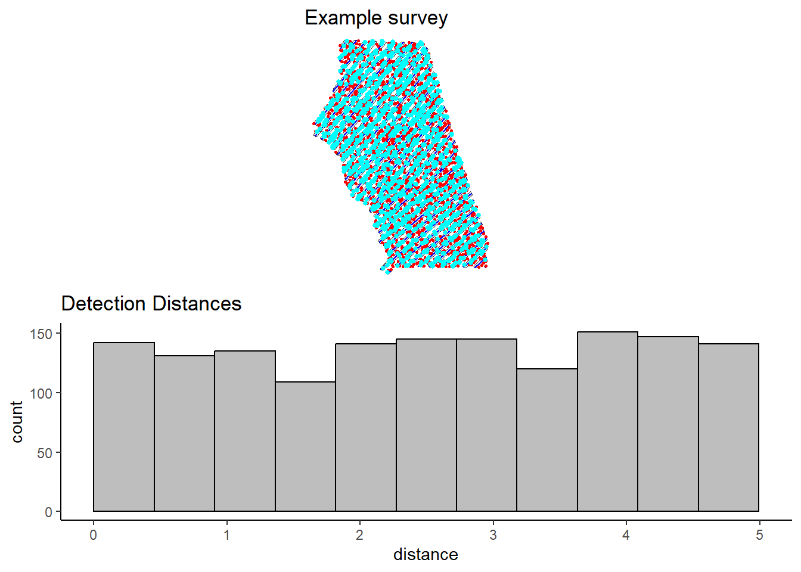
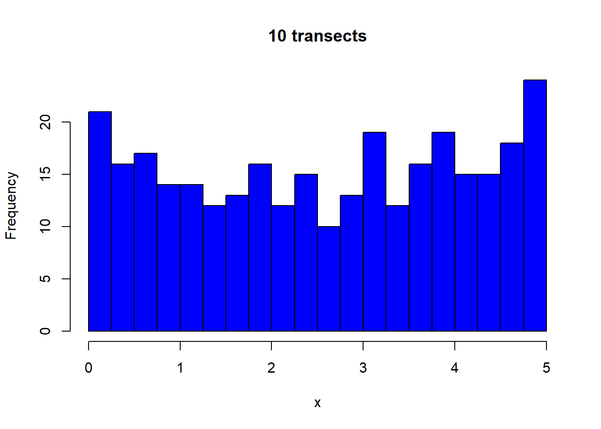

Uniform distribution of animals with respect to transects
Simulation of line transect survey, I won’t show the simulation details, but here is the distribution of animals (3000) and placement of 40 transects in the study area.

From this survey, sample pairs of transects to visually examine the uniformity of animal distances.
Two transects
Five transects
Ten transects
